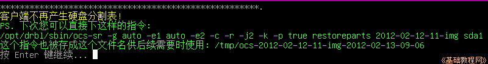

DRBL 操作指南
作者：TeliuTe 来源：基础教程网
十、用 Clonezilla 光盘还原分区镜像 返回目录 下一课使用 live cd 光盘可以对系统进行备份和还原，数据分区可以直接使用安装的 clonezilla；
1、启动 Clonezilla 光盘
1）下载再生龙光盘：http://sourceforge.net/projects/clonezilla/files/clonezilla_live_stable/；
2）下载下来的镜像刻成光碟，用光盘启动就可以使用了，也可以用硬盘启动的方法；
硬盘启动参考：http://clonezilla.nchc.org.tw/clonezilla-live/livehd.php
U盘/可移动磁盘：http://clonezilla.nchc.org.tw/clonezilla-live/liveusb.php
pxe无盘启动：http://clonezilla.nchc.org.tw/clonezilla-live/livepxe.php
2、光盘启动
1）放入 live cd 光盘，设置从光盘启动，出现 Clonezilla 启动菜单；
2）耐心等待启动系统，然后出现语言选择，按下方向键选择“简体中文”按回车键继续；
3）接下来的键盘映射，直接按回车键继续；
4）稍等 ，接下来的模式选择中，直接按回车键进入第一项，开始使用再生龙；
5）在接下来的备份模式中，选择第一项“[存到/来自]镜像文件”，按回车键继续；
6）接下来是询问镜像文件保存位置，选择第一项保存到本机的分区中，按回车键继续；
7）接下来是等待插入U盘/移动硬盘，直接按回车键继续；
8）接下来选择以前存放镜像的分区，一般是存在后面的分区中，按下方向键选择一个数据分区，按回车键继续，第一个分区一般是系统分区；
9）接下来询问保存的文件夹目录，直接按回车键保存在分区的根目录；
3、镜像设置
1）接下来显示分区挂载情况，应该只挂载了存放镜像的分区；

2）接下来的备份模式中，选择第一项初学模式，按回车键继续；
3）接下来的操作模式选择中，按下方向键选择第四项“还原镜像文件到分区”，按回车键继续；
4）接下来是选择镜像文件，直接按回车键继续，如果有多个文件，按方向键找到正确的镜像，再按空格键选中，再按回车键；
5）接下来是选择恢复到哪个分区，一般是第一个系统分区，选择第一个sda1，然后回车键继续；
6）接下来给出操作命令和提示，直接按回车键跳过检查继续；

7）接下来显示警告信息，目标分区将会被覆盖，是否继续，输入 y 按回车键继续；
8）接下来要求再次确认是否继续，输入 y 按回车键继续；
9）接下来耐心等待镜像恢复操作；
10）恢复完成后，给出一段提示，按回车键继续；
11）然后出来一个操作选择，0是关机、1是重启、2是进入命令行、3是重新开始，输入一个数字然后按回车键完成；
12）注意，按0选择关机后，稍等会弹出光盘，取出后按回车键完成；
本节学习了用 Clonezilla 还原分区镜像的基础知识，如果你成功地完成了练习，请继续学习下一课内容；
本教程由86团学校TeliuTe制作|著作权所有
基础教程网：http://teliute.org/
美丽的校园……
转载和引用本站内容，请保留版权信息和本站链接。